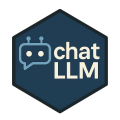

chatLLM 
Overview
chatLLM is an R package providing a single, consistent interface to multiple “OpenAI‑compatible” chat APIs (OpenAI, Groq, Anthropic, DeepSeek, Alibaba DashScope, and GitHub Models).
Key features:
- 🔄 Uniform API across providers
- 🗣 Multi‑message context (system/user/assistant roles)
- 🔁 Retries & backoff with clear timeout handling
- 🔈 Verbose control (
verbose = TRUE/FALSE) - ⚙️ Discover models via
list_models() - 🏗 Factory interface for repeated calls
- 🌐 Custom endpoint override and advanced tuning
Installation
From CRAN:
install.packages("chatLLM")Development version:
# install.packages("remotes") # if needed
remotes::install_github("knowusuboaky/chatLLM")Setup
Set your API keys or tokens once per session:
Sys.setenv(
OPENAI_API_KEY = "your-openai-key",
GROQ_API_KEY = "your-groq-key",
ANTHROPIC_API_KEY = "your-anthropic-key",
DEEPSEEK_API_KEY = "your-deepseek-key",
DASHSCOPE_API_KEY = "your-dashscope-key",
GH_MODELS_TOKEN = "your-github-models-token"
)Usage
5. Discover Available Models
# All providers at once
all_models <- list_models("all")
names(all_models)
# Only OpenAI models
openai_models <- list_models("openai")
head(openai_models)6. Call a Specific Model
Pick from the list and pass it to call_llm():
anthro_models <- list_models("anthropic")
cat(call_llm(
prompt = "Write a haiku about autumn.",
provider = "anthropic",
model = anthro_models[1],
max_tokens = 60
))Troubleshooting
-
Timeouts: increase
n_tries/backoffor supply a custom.post_funcwith highertimeout(). -
Model Not Found: use
list_models("<provider>")or consult provider docs. - Auth Errors: verify your API key/token and environment variables.
- Network Issues: check VPN/proxy, firewall, or SSL certs.